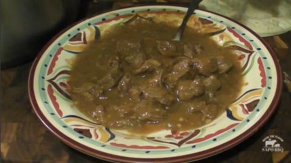

Sapo's Carne Guisada

Description
Sapo's South Texas Carne Guisada is a delicious Mexican beef stew that is
made with stew meat, bell pepper, onion, tomatoes, garlic, salt, pepper,
cumin, and flour. It is a hearty and flavorful dish that is perfect for a
cold winter day. Serve it with tortillas, Spanish rice, and pinto beans
for a complete meal.
Ingredients:
- lbs of stew meat
- 1 Green Bell Pepper — chopped large
- 1 medium Onion - chopped large
- 2 Large Tomatoes — chopped large
- 2 Tablespoon Garlic — chopped
- 1 Tablespoon of Salt
- 1 Teaspoon of black Pepper
- 2 Teaspoons of Comino aka Cumin
- 2-3 Tablespoons of Flour
- Water & Large as needed
Directions:
- Melt a few tablespoons of lard in a large pot
- Add the meat to the lard and slightly brown all sides.
- Add the veggies on top of the meat
- Add all of the spices on top of the veggies.
- Stir it up and add a cup of water.
-
Bring to a boil and then to a simmer. Stir very slow every 45 minutes.
- Cook for about 2 hours or until the meat is fork tender.
-
Make a slurry of the flour and the water. 2 TBS Flour to about 1/2 cup
water.
- Slowly pour the slurry into the pot with the meat and veggies.
-
Stir very slow and then let it simmer for 30 minutes. A gravy will form.
- Salt to taste.
- Serve with Tortillas, Spanish rice and pinto beans...
Home